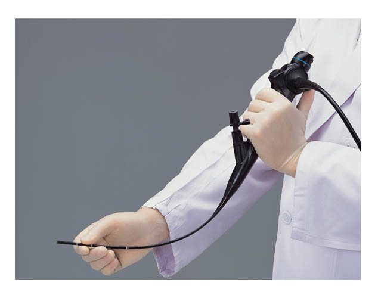
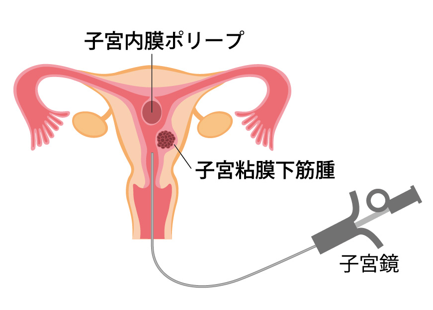

ホーム >腫瘍外来：子宮鏡検査
腫瘍外来：子宮鏡検査
子宮鏡検査について
子宮鏡検査では、子宮内膜症・子宮筋腫などの不妊治療の合併症を診察します。子宮鏡検査を行うことにより、粘膜下筋腫・内膜ポリープ・子宮奇形・その他着床障害や流産の原因を更に精査できます。子宮鏡検査の所見により、腫瘍の治療が必要か否かを判断していきます。また、腫瘍の治療について相談（セカンドオピニオン）いただくことも可能です。
腫瘍の治療が必要と判断された場合は、特殊外来の診察医師である中山医師による静岡厚生病院での手術の他、ご希望に応じて他施設への紹介を行います。日本産科婦人科内視鏡学会技術認定医の資格を持つ中山医師は、腹腔鏡・子宮鏡などの内視鏡を得意分野とし、所属する静岡厚生病院の他、他病院からも術者として招かれ多くの手術を執刀されています。
 ページの先頭へ
ページの先頭へ子宮鏡検査とは

子宮鏡検査は直径3.8mmの内視鏡(ファイバースコープ)を用いて、子宮内腔を直接観察する検査です。超音波検査などでは判然としない、子宮内腔の状態を観察できます。また子宮鏡検査により、はじめて不妊症や不育症の原因が診断できることがあります。
子宮鏡検査の対象疾患

下記の子宮内の疾患は不妊症の原因となりえます。子宮鏡検査で正確な状態の把握が可能です。
・子宮内膜ポリープや子宮内膜増殖症
・子宮粘膜下筋腫
・中隔などの子宮奇形
・子宮腔癒着症
QAリスト
- Q：痛みはありますか？
- A：子宮鏡は細く柔らかいため痛みを感じることは少なく、通常麻酔は不要です。生理食塩水を子宮内に注入する際に、若干の痛みを感じることがあります。
- Q：時間はどの程度かかりますか？
- A：検査に要する時間は5〜10分程度です。
子宮鏡検査診療日
| 担当医師 | 中山毅医師・宮野奈緒美医師 |
|---|---|
| 診療日 | 毎週火曜日（9：00〜13：00）、毎週金曜日（9:00〜13：00) |
| 予約方法 | インターネットでのご予約が可能です。 |
※日時に変更がある場合がございます。ご予約の際にご確認ください。